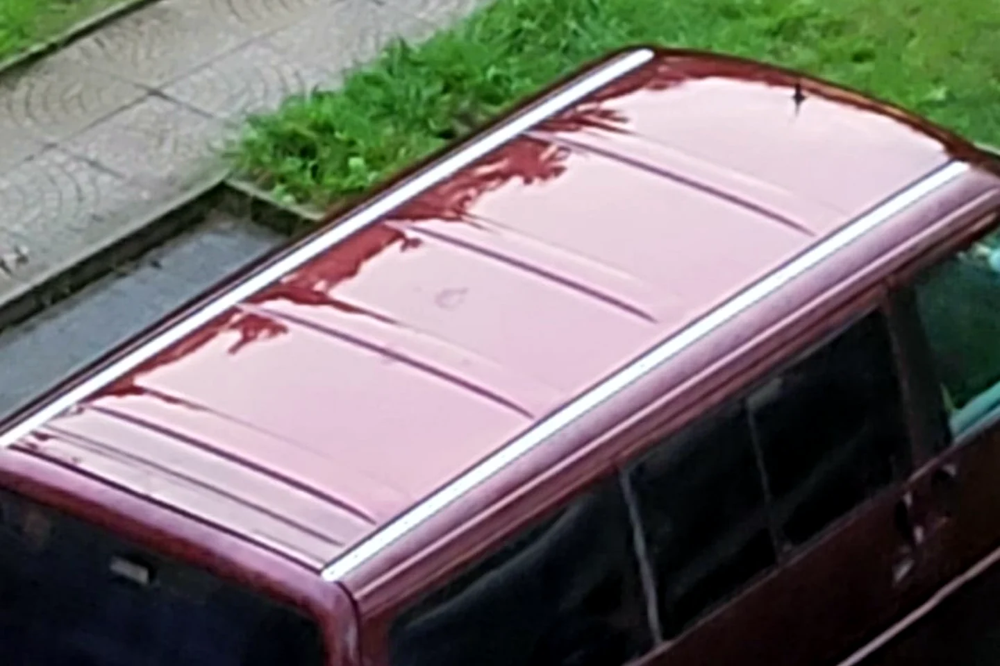

Nouveaux avions pour le rouge — enfin de la place pour les bagages sur le toit

Dans un T4, chaque centimètre libre finit par devenir précieux. Au début, on se dit encore : Tout ça s’imbrique. Puis viennent la table, la moquette, les outils, les fournitures, et toutes les choses qui rendent la vie en déplacement agréable. Avec le Red, il devint vite clair : si des bagages volumineux devaient disparaître de l’intérieur, le toit devait coopérer.
Pourquoi j’ai choisi Airlineschienen
Je ne voulais pas d’une solution rigide qui ne conviendrait qu’à une seule boîte. Les skis d’aviation me donnent plusieurs points d’attache et donc plus de liberté lors de mes bagages. Selon le voyage, un toit ou un sac à bagages peut être fixé au sommet, tandis que l’intérieur reste libre pour vivre. Surtout lors de longues tournées, cette différence est énorme : je n’ai pas besoin de réorganiser la moitié de ma maison chaque soir avant de pouvoir aller me coucher.
Sur la photo, on peut voir les deux rails longs sur le toit. C’est exactement ce que je voulais : simple, solide, et sans fioritures inutiles. Cependant, les rails eux-mêmes ne sont qu’une partie de la solution. Le facteur décisif est toujours l’ensemble du système, comprenant le toit, les fixations, les raccords appropriés, les dispositifs d’attachement et la charge réelle du toit du véhicule.
Ce qui est autorisé sur mon toit
Mon principe est simple : encombrant et aussi léger que possible vers le haut, lourd vers le bas. Cela améliore non seulement l’ordre, mais maintient aussi la concentration raisonnable. Tout ce qui pourrait être mouillé ou sensible nécessite également un emballage résistant aux intempéries. Avant chaque départ, je vérifie si les sangles et les points de fixation sont bien sécurisés. Après les premiers kilomètres, je vérifie à nouveau — mieux vaut une fois de trop que trop peu.
Plus d’espace signifie plus de paix
Le plus gros gain pour moi n’était pas le toit lui-même, mais l’intérieur plus calme. Les choses ont soudain une place fixe. Les zones de siège et de couchage restent utilisables, et vous n’avez pas besoin de déplacer une avalanche de bagages lors de votre arrêt. Ce sont précisément ces petites modifications qui transforment progressivement une voiture en maison.
C’est pourquoi les skis d’avion n’étaient pas qu’un simple projet de décoration, mais une décision pratique pour ma vraie routine de voyage. Ils n’ont pas agrandi la version rouge — mais ils ont fait paraître l’espace disponible bien plus grand.
À bientôt et bon voyage toujours,
votre Tussy 💛